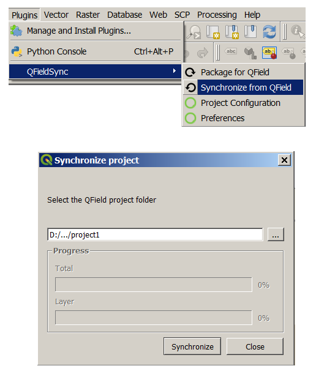

The QFieldSync plugin helps preparing and packaging QGIS projects for QField.
QFieldSync supports your project preparation with automating the following:
To get a quick overview of the process, here is a list of typical steps:
In QGIS, open the plugin library and search for qfield sync. Select the plugin in the list and click on Install.

The project configuration is saved in the master .qgs project file. This way it is possible to pre-configure a project once and use it repeatedly.


In the project configuration dialog, an action can be defined for each layer individually. Depending on the layer type, different types of actions are available.
A base map is a raster layer which is added as the bottommost layer to the packaged project file.
If the base map option is enabled, a base map will be rendered, whenever the project is packaged. The area of interest - the extent which will be rendered - will be chosen at packaging time.
There are two possible sources for a base map:
The tile size defines the spatial resolution. It determines the number of map units per pixel. If the map canvas CRS has meters as units and tile size is set to 1, each raster pixel will have a spatial extent of 1x1 m, if it is set to 1000, each raster pixel will have a spatial extent of 1 square kilometer.
If only synchronize features in area of interest is checked, only features which are within the extent of the map canvas as packaging time will be copied to the offline editing working copy.
Once the project is configured, package it in a folder. This folder will contain the .qgs and the data used in it.

Copy the folder on your device. Open Qfield, open the project and start collecting data.
Make also sure to save the QGIS project using the regular Save As of QGIS as you’ll have to re-open it later when you want to synchronize the changes.
When you want to synchronize what you have collected, re-open the project in QGIS (the one you saved with a regular Save As).
Copy the project folder from your device to your computer and use the Synchronize from Qfield menu to synchronize your changes from the protable project to the main project.
